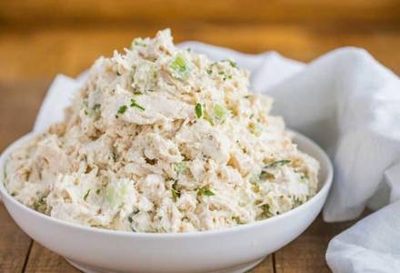

Chicken Salad
- 1 can of chicken breast
- 2 T mayonnaise
- 1/2 c of grapes, quartered
- 2 stalks of chopped celery
- Salt and pepper to taste
- Shred chicken in a bowl.
- Stir in mayonnaise, grapes, celery, salt, and pepper.
- Eat plain or serve on croissants or rolls.
This is great with crackers or bread or can simply be eaten plain. Add apples or pickles for extra crunch.